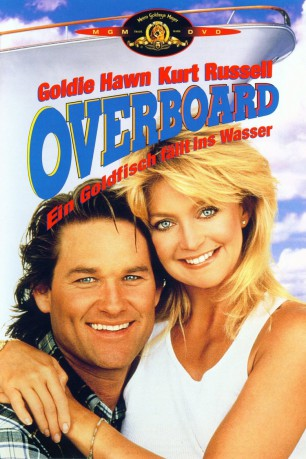

gesehen am 24.11.2015
gesehen am 24.11.2015Alternativ: Overboard gesehen am 24.11.2015
 
 IMDB-Wertung: 6.8 / 10
IMDB-Wertung: 6.8 / 10  Metascore:
Metascore: 
Die hochnäsige Millionärsgattin Joanna Stayton (Goldie Hawn) führt ein Leben ins Saus und Braus. Als sie den Tischler Dean Proffitt (Kurt Russell) anheuert, damit er einen pompösen Kleiderschrank für ihre Luxusyacht anfertigt, ist sie mit dem Ergebnis unzufrieden und verweigert die Zahlung. Doch der betrogene Handwerker muss nicht lange warten, bis sich eine Gelegenheit bietet, es der verzogenen Schnepfe heimzuzahlen: In der folgenden Nacht geht Joanna über Bord, ohne dass ihr Ehemann Grant (Edward Herrmann) oder jemand vom Personal etwas bemerkt. Nachdem man sie aus dem Wasser gezogen und ins örtliche Krankenhaus gebracht hat, muss sie feststellen, dass sie ihr Gedächtnis verloren hat. Durch die Nachrichten erfährt Dean von dem Unglück und ihm kommt eine Idee: Seine vier Söhne brauchen eine Mutter, weswegen er sich kurzerhand als Joannas Ehemann ausgibt...
Jahr: 1987
Dauer: 106 Minuten
FSK: 12
Land: USA Studio: MGM/UA Distribution CompanyTonspuren:
Untertitel:
Auflösung: 720p (1280x720) Größe: 8755 MB
Regisseur:  Garry Marshall
Garry Marshall
Drehbuch: Leslie Dixon
Soundtrack: Alan Silvestri
Darsteller:
 Goldie Hawn als Joanna / Annie
Goldie Hawn als Joanna / Annie Kurt Russell als Dean Proffitt
Kurt Russell als Dean Proffitt Edward Herrmann als Grant Stayton III
Edward Herrmann als Grant Stayton III Katherine Helmond als Edith Mintz
Katherine Helmond als Edith Mintz Mike Hagerty als Billy Pratt
Mike Hagerty als Billy Pratt Roddy McDowall als Andrew
Roddy McDowall als Andrew Bing Russell als Elk Cove: Sheriff Earl
Bing Russell als Elk Cove: Sheriff Earl Don Thompson als Coast Guard Cutter: Coast Guard Guy
Don Thompson als Coast Guard Cutter: Coast Guard Guy Garry Marshall als Drummer , uncredited
Garry Marshall als Drummer , uncredited Sven-Ole Thorsen als Olaf, Stayton Flunky , uncredited
Sven-Ole Thorsen als Olaf, Stayton Flunky , uncredited Tom Wright als The Wright Brothers Band
Tom Wright als The Wright Brothers BandDatei: X:\1987\Overboard - Ein Goldfisch fällt ins Wasser (1987, FSK12, 1280x720).mkv seit 05.11.2015
Festplatte: HD 1987-1991
 Es gibt insgesamt 50 Filme in der Gruppe '1987'
Es gibt insgesamt 50 Filme in der Gruppe '1987'